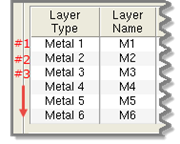

Perform the
basic steps of the Calibre CMPAnalyzer rerun flow using Calibre
Interactive and Calibre YieldServer commands.
Procedure
- From a command line, set the following environment
variable and value according to your shell environment:
setenv CMP_ENABLE_RERUN_SIMULATION 1
This keeps the necessary data during the original
DFM database creation for further re‑extraction and simulation.
- Create the original DFM database using Calibre
Interactive and the original runset for the CMP analysis. For example:
calibre -gui -dfm -batch original_runset
The original database may be constructed in batch
or GUI modes.
The required DB_EXTENT layer file is exported
during this step or exported separately. See “Exporting the DB_EXTENT Layer”.
- Add the DB_EXTENT layer import settings to the
modified runset. See “Setting DB_EXTENT in the Calibre CMPAnalyzer Rerun Flow”.
The runset keywords or
equivalent GUI settings for exporting the extent layer are not needed
in the modified runset used to import the extent layer and rerun
the extraction.
- Open the original DFM database using Calibre
YieldServer.
calibre -ys -cmp -dfmdb original_dfmdb
- Specify the cmp::rerun_extraction command with
arguments at the Calibre YieldServer command prompt (>). For example
(specify in one line):
> cmp::rerun_extraction -layers [list 2 4] -runset ./modified_runset ‑resimulate
This re‑extracts and resimulates the layers in
the modified runset as specified by the layer index list, for example,
[list 2 4]. The layer index number is based on the order of the
layers in the CMP layers table in the Calibre Interactive Inputs
pane. The first layer (top‑left entry) in the table is layer index
1. For example:
Figure 1. Layer Index Number
Note: If you are using an updated
recipe file, you must have a valid recipe with process changes corresponding
to the layer specifications in the Calibre CMPAnalyzer rerun flow.
- (Optional) Rerun the hotspots calculation at
the Calibre YieldServer command prompt and examine the results from
layer index 4 and up in Calibre RVE for DFM.